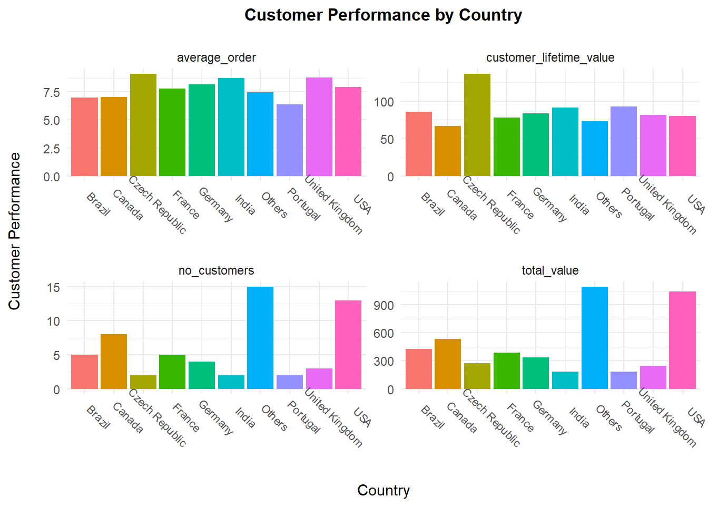

This project combines both R and SQLite to showcase the robustness of querying data from a database and visualizing observations in R. While some data cleaning and manipulation can and will be done using query language (SQLite), majority of the data work will be done using R.
The database used is the “Chinook Database”, an open source database. Markdown allows both R script and SQLite query language plus html knitting.
To be able to run SQLite query on R you need to load the DBI and RSQLite packages in your environment.
library(tidyverse)
library(DBI)
library(RSQLite)
library(ggplot2)
library(plotly)
library(lubridate)
library(ggcorrplot)After downloading the database, load it/create a connection within an R markdown chunk. You can declare the connection within the setup chunk and you wont need to constantly declare it in every subsequent chunk.
conn<-dbConnect(SQLite(), "chinook.db")
tables <- dbListTables(conn)The reason i prefer running sql queries on their own chunks in R markdown is because it allows to copy and paste SQL from other terminals, no formatting required. Also, SQL syntax is highlighted and has auto-suggestions. Very nifty!
--Preview the tables in the database
SELECT
name,
type
FROM sqlite_master
WHERE type IN ("table","view");
| name | type |
|---|---|
| album | table |
| artist | table |
| customer | table |
| employee | table |
| genre | table |
| invoice | table |
| invoice_line | table |
| media_type | table |
| playlist | table |
| playlist_track | table |
After creating a query to trim, combine or filter tables from the database, it is possible to store the resulting table in order to use it with R commands. Just specify “output.var” and the name you would like to give the dataframe.
---Most sold genres in the USA
WITH USA_tracks AS
(SELECT il.quantity, il.track_id
FROM invoice_line as il
INNER JOIN invoice as i ON i.invoice_id=il.invoice_id
WHERE i.billing_country="USA")
SELECT g.name as genre_name, SUM(ut.quantity) as quantity_sold
FROM track as t
INNER JOIN USA_tracks as ut ON ut.track_id=t.track_id
INNER JOIN genre as g ON g.genre_id=t.genre_id
GROUP BY 1
ORDER BY 2 DESC
LIMIT 10;
Exploring the resulting table using R and ggplot2. Being able to utilize both languages/tools helps save the storage space (saving only the data you need) and subsequently exploring it with R visual library.
Below is an example trying to figure out the best selling genres in the USA. This should help a record label to decide which new artists tosign onto a label. For example, a pop, punk, blues and hip hop artists walking through the door and management can only select 3.
#Looking at
genres_prop<-genres%>%
drop_na(quantity_sold)%>%
mutate(prop_quantity=quantity_sold/sum(quantity_sold))
plot1<-genres_prop%>%
ggplot(aes(x=reorder(factor(genre_name), -quantity_sold), y=quantity_sold, fill=genre_name))+
geom_col(alpha = 0.8, width = 0.85) +
theme_minimal()+
labs(title = "Most selling genres in the USA",
y="No. Tracks Sold",
x="Genre")+
theme(plot.title = element_text(hjust = 0.5, size = 12, face="bold",
margin = margin(t = 0, r = 0, b = 15, l = 0)),
axis.title.y = element_text(margin = margin(t = 0, r = 15, b = 0, l = 0)),
axis.title.x = element_text(margin = margin(t = 15, r = 0, b = 0, l = 0)),
legend.position="none")
plot1Out of the four artists, it would be wise to select the artists producing Punk, Blues and Pop as they are the three best performing genres out of the four artists, in the USA.
Back to SQL, this time querying the database to get sales figures per customer rep/support. Trying to see which customer support agents performed the best (i.e. brought the most sales)
--Best performing sales rep/customer support
WITH sales_cus AS (
SELECT e.first_name||" "||e.last_name as sales_rep, e.hire_date, e.birthdate, e.title, c.customer_id
FROM employee as e
INNER JOIN customer as c ON c.support_rep_id = e.employee_id
)
SELECT sc.sales_rep, sc.hire_date, sc.birthdate, sc.title, SUM(i.total) as total_sales
FROM invoice as i
INNER JOIN sales_cus as sc ON sc.customer_id=i.customer_id
GROUP BY 1
ORDER BY 5 DESC;
Once the desirable dataframe is saved, we can use R visual library to plot performance and even analyze factors contributing to performance of a sales rep i.e. correlation.
#format dates
sales$hire_date<-as.numeric(ymd_hms(sales$hire_date, tz="Europe/Berlin"))
sales$birthdate<-as.numeric(ymd_hms(sales$birthdate, tz="Europe/Berlin"))
#Plot performance
plot2<-sales%>%
ggplot(aes(x=sales_rep, y=total_sales, color=sales_rep))+
geom_point()+
theme_minimal()+
labs(title = "Best performing Sales Rep",
y="Amount Sold",
x="Sales Rep")+
ylim(1000,2000)+
theme(plot.title = element_text(hjust = 0.5, size = 12, face="bold",
margin = margin(t = 0, r = 0, b = 15, l = 0)),
axis.title.y = element_text(margin = margin(t = 0, r = 15, b = 0, l = 0)),
axis.title.x = element_text(margin = margin(t = 15, r = 0, b = 0, l = 0)),
legend.position="none")
plot2#check correlation between factors
corr <- sales%>%
select(-1,-4)%>%
cor(use = "pairwise.complete.obs")
plot3 <- ggcorrplot(
corr, method = "circle", title = "Factors Influencing Performance")+
theme(plot.title = element_text(color="black", size=12, face="bold", hjust = 0.5,
margin = margin(t = 0, r = 0, b = 15, l = 0)))
plot3Jane peacock was the best performing sales support with close to 1750 sold. It would seem that hiring date has a strong negative correlation (r=-0.95) with total sales. Being hired earlier has a sales support rep at an advantage over someone that was hired later.
There is also a slight positive correlation (r=0.25) between birth date and performance. Younger sales support seem to have a slight advantage over older sales reps. Although this observation is not statistically significance.
Lastly, we can look at countries with the best customer values (lifetime values) as these could be countries the record label might look into increasing customer acquisition efforts.
--Countries with the best customer value
SELECT c.country, COUNT(DISTINCT c.customer_id) as no_customers, i.invoice_id, SUM(il.unit_price) as total_value,
SUM(il.unit_price) / count(distinct c.customer_id) customer_lifetime_value,
SUM(il.unit_price) / count(distinct il.invoice_id) average_order
FROM customer as c
INNER JOIN invoice as i ON i.customer_id=c.customer_id
INNER JOIN invoice_line as il ON il.invoice_id=i.invoice_id
GROUP BY 1
ORDER BY 2 DESC;
#Recode countries with less than 2 customers
country<-country%>%
select(-invoice_id)%>%
mutate(country=ifelse(no_customers<2,"Others", country))%>%
group_by(country)%>%
mutate(no_customers=sum(no_customers))%>%
mutate(total_value=sum(total_value))%>%
mutate(customer_lifetime_value=mean(customer_lifetime_value))%>%
mutate(average_order=mean(average_order))%>%
distinct()
#Visualize spread
country_longer<-country%>%
pivot_longer(cols = c(2:5),
names_to="customer",
values_to="value")
plot4<-country_longer%>%
ggplot(aes(x = country, y=value, fill=country))+
geom_bar(stat = 'identity')+
theme_minimal()+
geom_col(alpha = 0.8, width = 0.85) +
facet_wrap(vars(customer), ncol = 2, scales="free")+
labs(title="Customer Performance by Country", x = "Country", y = "Customer Performance")+
theme(plot.title = element_text(hjust = 0.5, size = 12, face="bold",
margin = margin(t = 0, r = 0, b = 15, l = 0)),
axis.title.y = element_text(margin = margin(t = 0, r = 15, b = 0, l = 0)),
axis.title.x = element_text(margin = margin(t = 15, r = 0, b = 0, l = 0)),
axis.text.x = element_text(size=7.7, angle=-45, vjust = -2),
axis.ticks = element_blank(),
legend.position="none")
plot4
The USA has the most number of customers as well as the highest total value of orders. However, the Czech Republic has the highest customer lifetime value, meaning it is a market that one should invest more in acquiring customers.
Once done, do not forget to disconnect the database from your environment.
dbDisconnect(conn)